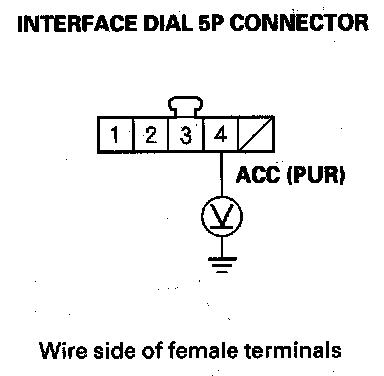
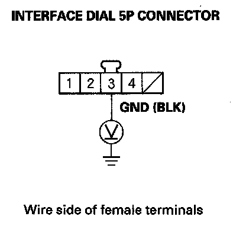
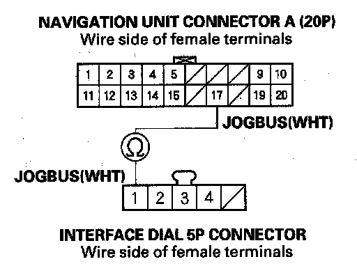

Interface Dial Buttons Do Not Work
Interface dial buttons do not workNOTE:
- Confirm the correct DVD color and version disc is installed in the navigation unit.
- Always check the connectors for poor connections or loose terminals.
- Before troubleshooting, get the navigation system anti-theft codes.
- After troubleshooting, enter the anti-theft codes for the audio system and navigation system.
1. Turn the ignition switch to ACC (I).
2. Go into the Diagnostic mode, and use "Hard Key" test under Unit Check.
Do the buttons work properly?
YES - The system is OK at this time.
NO - Go to step 3.
3. Try all the buttons on the navigation system.
Is there a specific row or columns of buttons, set of buttons, or a certain button that does not respond properly (i.e. pressing a button in the lower left corner causes a button in the right lower corner to respond.)?
YES - Replace the interface dial.
NO - Go to step 4.
4. Turn the ignition switch ON (II).

5. Measure the voltage between the interface dial 5P connector terminal No. 4 and body ground.
Is there battery voltage?
YES - Go to step 6.
NO - Repair open in the wire between the under-dash fuse/relay box and the interface dial.

6. Measure the voltage between interface dial 5P connector terminal No. 3 and body ground.
Is there less than 0.5 V?
YES - Go to step 7.
NO - Repair open in the wire between the interface dial and body ground (G506).
7. Turn the ignition switch OFF.
8. Disconnect the interface dial 5P connector and the navigation unit connector A (20P).

9. Check for continuity between navigation unit connector A (20P) terminal No. 17 and interface dial 5P connector terminal No. 1.
Is there continuity?
YES - Check for an open in the wire between the navigation unit connector A (20P) terminal No. 19 and the interface dial 5P connector terminal No. 2. If the wire is OK, go to step 10. If the wire is open, repair the wire.
NO - There is an open in the circuit between the interface dial and the navigation unit. Check for poor connections or loose terminals at the interface dial and navigation unit. If a poor connection or loose terminals is found, replace the affected shielded harness.
10. Substitute a known-good interface dial, and recheck.
Is the system OK?
YES - Replace the original interface dial.
NO - Replace the navigation unit.